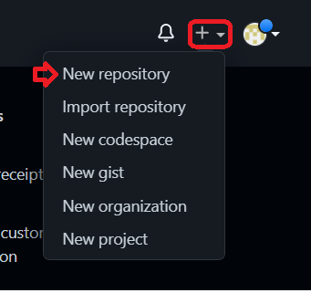
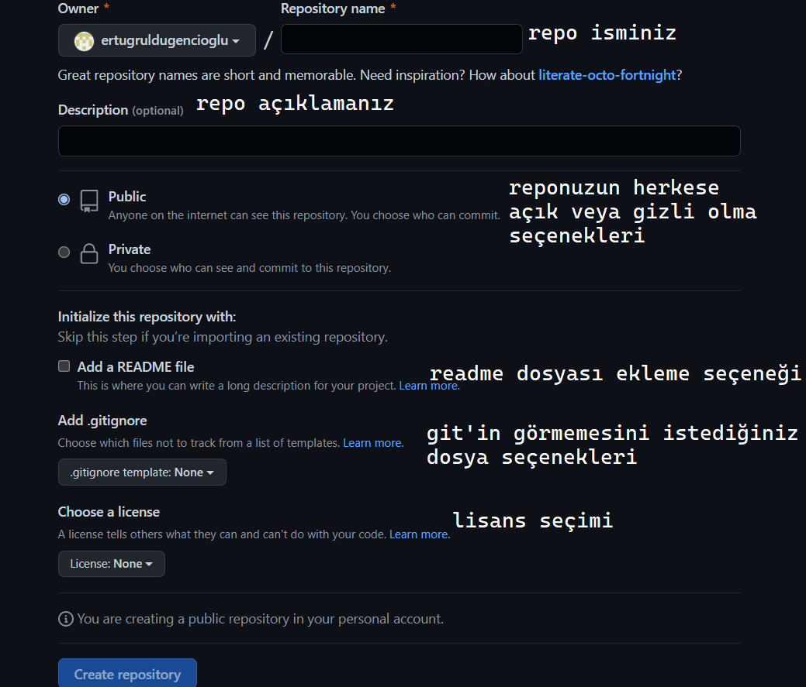

GitHub
Remote Repo oluşturma
Remote repository oluşturmak için ekranın sağ üst kösesinden "New Repository" seçeneği seçilir
Repo oluşturma sayfasında istenilen özelliklerde repo oluşturulur
Git İndirme:
Git sürüm kontrol sistemini işletim sisteminize uygun olan versiyonunu indirin
Git Kurulumu:
İlk Yapılandırma:
Komut istemini açtıktan sonra kimliğinizi Git sistemine tanıtmak için ilk yapmanız gereken mail ve kullanıcı adınızı girmek
- git config --global user.name "kullanici-adi"
- git config --global user.email "eposta-adresi"
Kullanım:
Git'i kullanmak istediğiniz dizine gittikten sonra aşağıdaki komut ile git'i proje klasörümüze dahil edelim. (Local repo oluşturma)
- git init
Yeni eklenen veya üzerinde değişiklik yapılan dosyaları staged ortamına göndermek için:
- git add (dosya ismi)
staged ortamına gönderilen dosyaların takibinin bırakılması için:
- git rm --cached (dosya ismi)
üzerinde çalışılan dosya klasörün içindeki bir değişime uğrayan, silinen veya eklenen dosyalar hakkında hakkında bilgi almak için:
- git status
Staged ortamındaki dosyaları local bir repository'e göndermek için:
- git commit -m "(commit mesajınız)"
Yapmış olduğunuz commit işlemlerini listelemek için:
- git log
Remote veya local repolara branch eklemek için:
- git branch (branch ismi)
Remote veya local repolarda branch silmek için:
- git branch -d (branch ismi)
Branchlar arasında geçiş yapmak için:
- git checkout (branch ismi)
Commitler arasında geçiş yapmak için:
- git checkout (commit id)
Başka branchtaki değişiklikleri içinde bulunduğunuz branch'a aktarmak için:
- git merge (branch ismi)
Remote repoları cihazımızda klasöre clonelamak için:
- git clone (repository clone link'i)
Projelirimizi Remote Repoaya Aktarma:
Cloneladığımız repo klasörünün içine repomuza koymak istediğimiz dosyalarımızı aktardıktan veya hali hazırda var olan dosyalardaki değişiklikleri commit ettikten sonra;
komut istemi üzerinden dosya dizinine giderek aldığımız commitleri push etmek için:
- git push origin (branch ismi)
.gitignore:
git'in görmesini istemediğimiz dosyaları belirtmemizi sağlar. Proje dizinine oluşturulur. Projede commit almadan önce gitignore dosyası yapılmalı commit edilen dosyalar .gitignore'a eklenmez.
istenmeyen dosya uzantıları için:
- *.(dosya uzantısı)
istenmeyen klasör için:
- (klasör ismi)/
istenmeyen klasördeki seçili dosyaları ayırmak ve git tarafından izlenime sokmak için:
- !(klasör)/(dosya ismi uzantısıyla beraber)
istenmeyen dosyalar için:
- (dosya ismi uzantısıyla beraber)